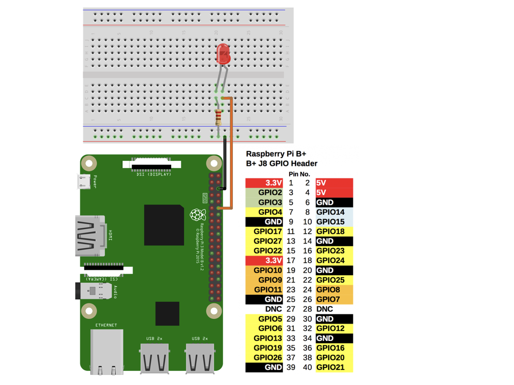

Google Assistant
2016 年 Google I/O 大會，首次推出Google Assistant ，Google Assistant 通常被認為是 Google Now 的升級或延伸版，但現今應用範圍越來越廣泛，除了可以安排預定事項外，現在還可以控制家中的設備，有種邁向真正個人小管家的概念。除此之外Google Assistant 能見度高，從Android phone、Android Wear、Android TV上都能見到，甚或是在iPhone上。
Google 也推出了 Google Home，讓使用者可以無需打開App就能透過語音來直接操作，相較於其他廠牌像是Amazon Alexa、Apple HomePod 能否利用廣泛的市佔率拔得頭籌，值得期待。
智慧家電
隨著物聯網的口號響起，『智慧家電』這塊大餅，誰也不能錯過，但如何能從眾家脫穎而出，值得去深思。個人從大學及碩論就開始往物聯網方向前進，目前也從事相關性質的工作，一開始認為寫個App及相關控制就能觸及到物聯網的真諦。站在消費者立場，家中如有5種不同牌子的產品，每控制一種就要打開特定App話，那效果還真不及遙控器來的方便。除非把品牌變成一種信仰，像是米家或Apple，有廣大的消費族群，消費者也只需下載一個App就能完成所有事情的話，那可能還有點機會，我想這也就是為什麼智慧家電發展會那麼遲緩的其中一個原因。
語音控制
我一直對於台灣智慧家電發展打了一個問號，直到我看到了像是Google Assistant、Amazon Alexa、Homekit之類的出場，才發現了一點曙光。不需被合併，只需要相關串接就能達到整合，重點是操作方便，不用花費時間在開啟App，透過喚醒語音裝置就能達到控制。早期官方提供的資源並不多，隨著資源的釋出，讓更多開發者能夠自由的發揮，進而帶動語音控制的發展，連Homekit都能用樹莓派，透過橋接方式控制家電產品，可以說是為智慧家電點亮了一盞燈。
架構圖
前面廢話那麼多，終於要來講本篇的目的及架構了，不曉得是否有人跟我一樣，晚上關燈上床總是要摸黑，睡到一半覺得電風扇很冷，想要關掉卻很懶得爬起來？那這篇就是救星，不過有前提，前提是需要一點點基礎，我會以盡量簡單的方式指引，如果有不懂的歡迎留言！
主要結構為利用Dialogflow為Google Assistant寫一個應用，並在Firebase紀錄事件，順便將語音控制的資訊儲存在Firebase裡。再用樹莓派連上Firebase，當Firebase狀態更新時，自動推送到樹莓派做GPIO更新。
我主要會切為三個部分，先從簡單的GPIO控制開始，再來加入Firebase應用，最後才是Dialogflow的撰寫。首先我們需要安裝環境Node.js，有安裝的可以跳到。
Node.js
Node.js介紹可以看這裡，為什麼要安裝Node.js呢？因為我們是寫JavaScript而Node.js內有環境可以執行我們的代碼。
首先Node.js官網下載安裝，一路下一步即可安裝完成。
接下來要檢查是否安裝，打開終端機輸入1
node -v
如回覆類似以下，及代表安裝完成
v9.10.1
npm
npm 全名為 Node Package Manager，是 Node.js 的套件（package）管理工具，在安裝Node.js時會一起幫我們安裝npm套件管理工具，我們只需要做檢查1
npm -v
若 npm 正確安裝，將會看到類似回覆
5.6.0
安裝onoff
樹莓派GPIO，採用onoff1
npm install onoff
GPIO控制
接一顆220Ω的電阻來限制電流，輸出腳位依照個人喜好更換，我有附上Raspberry Pi三代的接腳圖，照排列找相對應的GPIO。我是接第12根接腳，而第12接腳是GIPIO 18，所以程式碼就打18是輸出，並複製程式碼另存為.js檔案。

1 | var gpio = require("onoff").Gpio; |
打開終端機
Mac
⌘+ 空白鍵
輸入terminal
Windows
Windows + R
輸入cmd
利用Node.js執行程式。1
node xxx.js //xxx為路徑＋檔案名稱
依照上面步驟應該可以成功的點亮LED囉。下一篇會進行樹莓派連上Firebase並同步的教學。